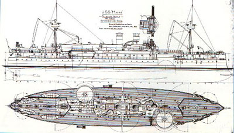

Terrible Explosion on Board the United States Battleship in Havana Harbor
MANY PERSONS KILLED AND WOUNDED
All the Boats of the Spanish Cruiser Alfonso XII, Assisting in the Work of Relief
None of the Wounded Men Able to Give Any Explanation of the Cause of the Disaster
Havana, Feb. 15 -- At 9:45 o'clock this evening a terrible explosion took place on board the United States battleship Maine in Havana Harbor.
Many persons were killed or wounded. All the boats of the Spanish cruiser Alfonso XII. are assisting.
As yet the cause of the explosion is not apparent. The wounded sailors of the Maine are unable to explain it. It is believed that the battleship is totally destroyed.
The explosion shook the whole city. The windows were broken in nearly all the houses.
The correspondent of the Associated Press says he has conversed with several of the wounded sailors and understands from them that the explosion took place while they were asleep, so that they can give no particulars as to the cause.
WHAT SENOR DE LOME SAYS
He Declares That No Spaniard Would Be Guilty of Causing Such a Disaster
Senor de Lome, the departing ex-Minister of Spain to this country, who arrived in this city last night, and went to the Hotel St. Marc, at Fifth Avenue and Thirty-ninth Street, was awakened on the receipt of the news from Havana.
He refused to believe the report at first. When he had been assured of the truth of the story he said that there was no possibility that the Spaniards had anything to do with the destruction of the Maine.
No Spaniard, he said, would be guilty of such an act. If the report was true, he said, the explosion must have been caused by some accident on board the warship.
THE MAINE'S VISIT TO HAVANA
First American Warship to Visit Cuba Since the Struggle Began
The Maine was ordered to Havana on Jan. 24 last, and was the first American warship to visit that port since the outbreak of the Cuban rebellion. In explanation of the visit of the American battleship to Cuba Secretary Long issued the following statement:
"So far from there being any foundation for the rumors yesterday of trouble at Havana, matters are now in such condition that our vessels are going to resume their friendly calls at Cuban ports and go in and out just as the vessels of other nations do. The Maine will go in a day or two on just such a visit. The department has issued orders for vessels to attend the public celebrations in Mobile and the Mardi Gras at New Orleans."
The Maine was commanded by Capt. Charles D. Sigsbee. Her other officers were Lieut. Commander Richard Wainwright, Lieuts. G. F. Holman, John Hood, and C. W. Yungen, Lieuts. (junior grade) G. W. Blow, J. T. Blandin, F. W. Jenkins, Cadets J. H. Holden, W. T. Cluverius, Amos Bronson, and D. F. Boyd, Jr.; Surgeon L. G. Heneberger, Paymaster C. W. Littlefield, Chief Engineer L. G. Nowell, Passed Assistant Engineer E. C. Bowers, Assistant Engineers J. R. Morris and D. R. Merritt, Cadet Engineers Pope, Washington, and Arthur Grenshaw, Chaplain J. P. Chidwick, and Lieutenant of Marines A. W. Catlin.
The commander of the Maine, Capt. Sigsbee, is a favorite in the Navy Department. For four years he was Chief of the Hydrographic Office, and by his energy brought the office up to a high standard.
He justified the department's judgment in the selection by running his ship straight into a dock in New York harbor to avoid sinking a packed excursion boat. This was a display of quick judgment, nerve, and pluck that pleased the department so highly that the Captain was sent a complimentary letter.
ARMAMENT OF THE MAINE
A Second-Class Battleship Built at the Brooklyn Navy Yard The Maine was placed in commission Aug. 17, 1895. She is a twin-screw, armored turret ship, of the belted type, and is known as a second-class battleship. Like the Texas, the Maine was built at a Government navy yard. The Texas was built at Norfolk; the Maine at the New York Navy Yard. Both ships were authorized when Secretary Whitney began the work of rehabilitating a then degenerate navy.
The Maine is of Navy Department designs throughout. The hull was built by navy yard workmen, and the engines were constructed by the Quintard Iron Works. That firm obtained the contract on its bid of $735,000. There were no other bidders.
The vitals of the ship are protected from gun-fire by an armor belt 180 feet in length. This belt has a maximum thickness of 11 1/2 inches. Below the water line the armor tapers to a thickness of 6 inches. To deflect an end-on or a fore-and-aft fire, heavy armored and sharply inclined V-shaped bulkheads are placed forward and aft, the ends joining the armor belt. The bulkheads are 6 inches thick, and well backed.
In her main battery the ship mounts four 10 inch and six 6-inch rifles. A number of guns of smaller caliber are distributed in advantageous places. The 10-inch rifles are mounted in pairs in two steel turrets. One of these is situated aft, the other forward. The turret armor is 10 1/2 inches thick. The protective power of these massive shields is increased by their circular shape, which tends to deflect a missile unless the impact is directly given.
The guns are breech-loading rifles, with bores 10 inches in diameter. The length of each gun is 329 inches. The weight is a little more than 24 tons. From them a full-service charge of 250 pounds of powder throws a 500-pound shell a distance of nine miles, with an initial velocity of 2,000 feet per second.
The 6-inch rifles are of the breech-loading pattern. These weapons measure 196 inches in length and weigh five tons each. The powder charge is fifty pounds. The weight of the shell is 100 pounds.
The secondary battery consists of six 6-pounders, eight 1-pounders, two revolving cannon, and two Gatlings. The heaviest of the rapid-fire guns throws a six-pound projectile at a velocity of 1,870 feet per second. The Maine has twin screw, vertical triple-expansion engines of an aggregate indicated horse power, including air and circulating pumps, of 9,000. The cylinders are 35 1/2, 57, and 88 inches in diameter by 36 inches stroke, and make 132 revolutions per minute at full power. The principle of interchangeability of parts, so characteristic of American machinery, has in these engines been carried out to the fullest extent.
All the cylinders have piston valves of the same size- 22 inches in diameter- there being one for the h. p., two for the i. p., and three for the l. p. cylinders. The valves are worked by Stephenson double-bar links. The cylinders are jacketed and fitted with liners of hard cast iron. The condensers are of composition and are cylindrical, 6 feet 5 1/2 inches at internal diameter. There are 5,140 brass tubes in each condenser, 5/8-inch internal diameter, and 8 feet 4 inches long between tube sheets, giving a cooling surface in each condenser of 7,010 square feet. Each condenser has a Blake combined air and circulating pump. There are two vertical air pumps worked by a beam, one horizontal circulating pump, and a single steam cylinder which works all the pumps.
There are eight single-ended boilers of the usual cylindrical or "Scotch" type, each 14 feet 8 inches in diameter and 10 feet long, designed for a working pressure of 135 pounds. Each boiler has three corrugated steel furnaces, made, like all others in this country, by the Continental Iron Works of Brooklyn, 42 inches in internal diameter. Each boiler has 118 stay tubes and 401 plain tubes, all of mild steel, 2 1/4 inches external diameter and 6 feet 7 inches long. The total grate surface is 553 square feet, and the total heating surface about 18,800 square feet. The boilers are in two separate water-tight firerooms.
The forced draught is on the closed ash-pit system, the air being led to the ash pits by ducts under the fireroom floors. The blowers are driven by inclosed three-cylinder engines, and are arranged to draw the air from engine and firerooms so as to give thorough ventilation. This system of forced draught has been stated by Commodore Melville to be, in his opinion, preferable to that by closed firerooms, as it is under much more complete control, and when a fire is cleaned or coaled, the draught is shut off, thus preventing the chilling effect of the cold air on the hot tube sheets.
The Maine is the only one of the vessels of above 5,000 tons which is so fitted, and it will be noted that her firerooms are fore and aft. In large ships with athwartship firerooms, it is very difficult to locate the blowers and air ducts so that they will not interfere with overhauling and repairs and will also ventilate the firerooms, and for this reason the closed fireroom system is used on them. The screw propellers are of manganese bronze and are four-bladed. The diameter is 14 feet 6 1/2 inches; mean pitch, 16 feet 1 inch; developed area of each, 65.5 square feet.
The vessel is designed to carry a crew of 800 men. She has accommodations for a flag officer and staff.
SENOR DE LOME ARRIVES
He Reaches the City with His Family From Washington En Route for Spain
Senor Dupuy de Lome, the ex-Minister from Spain to the United States, arrived in New York last night en route for his home. He reached Jersey City by the Congressional Limited over the Pennsylvania Railroad tracks at 8:55 P. M. His wife and their two sons and a valet completed the party.
They were met at the station by J. V. Jordan, proprietor of the Hotel St. Marc at Thirty-ninth Street and Fifth Avenue, and an old friend of Senor de Lome. The arrival attracted little or no attention. Half a dozen newspaper reporters were the only persons present except Mr. Jordan and the train hands at the station. As he alighted from the Pullman car, Senor de Lome was accosted by the reporters. He raised his hat in reply to their salutation, and replied to all inquiries that he had nothing to say. Then he hurried across the platform after Senora de Lome and her boys to the elevator, which took him to the street level.
There Mr. Jordan's private carriage, with two dark-brown horses, was awaiting them. Senor de Lome, with his elder son, occupied the front set, the valet sat on the box with the coachman, and Mr. Jordan remained afoot. The carriage boarded a Desbrosses Street ferryboat, and then learning that time would be saved by going by the Twenty-third Street line, the carriage turned and drove aboard the New Brunswick, which was lying in the slip. The New Brunswick is the ferryboat that was placed at the disposal of President McKinley when he visited the city to attend the banquet of the National Manufacturers' Association.
At the New York ferry house two detectives from the Central Office, Campbell and Barrett, were on hand in case of necessity. There was no necessity. No one else was in waiting, Spaniard or Cuban. As the carriage dashed out of the ferry house the detectives jumped into a cab and drove after it. Three cabs full of reporters followed the detectives. They drove down Twenty-fourth Street to Fifth Avenue to Thirty-ninth Street, where the ex-Minister and his party alighted at the private door of the Hotel St. Marc.
They did not register, but went immediately to the rooms on the second floor which had been prepared for them, and ten minutes later Senora de Lome, in reply to a note, sent down word that Senor de Lome was very tired and had gone to bed. Mr. Jordan said he did not know what Senor de Lome's immediate plans were, but his valet had told him that the party intended sailing for Europe by some steamer that started at 10 o'clock in the morning. The valet could not or would not remember the name of the steamer.
Thirty large trunks which the party brought with them from Washington were checked to the White Star pier, where the Britannic is moored, ready to sail at noon to-day.